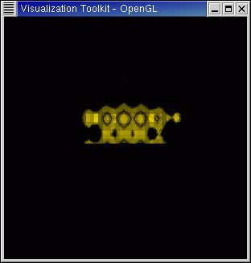

These days I'm trying to stay focused on using VTK (and Python, of course) on Linux clusters. This is motivated by the NSF TeraGrid project (and NCSA's involvement in that). Well, actually, that's only partly true. I'm also doing it because it's a fun little challenge.
One of my first goals with VTK 4.0 is to develop a parallel Python-VTK solution. (A parallel Tcl-VTK solution already exists with 4.0 as discussed below). This will be to support the VisBench project.
Although the information on this page pertains to Linux, it should carry over to most other platforms as well.
Since I intended to build VTK with MPI parallelism, I also had to:
For the parallel Python-VTK solution:
Switching to the VTK 4.0 directory (pathto/VTK)
the process to build Makefiles using cmake was then an iterative one.
I began by running
cmake which generated the CMakeCache.txt file (from CMakeLists.txt).
The CMakeCache.txt file contains "keys" with associated values. These keys
replace the pre-4.0 configure command line options.)
I then edited CMakeCache.txt and, for example, turned on the following flags
(keys):
BUILD_SHARED_LIBS
VTK_USE_HYBRID
VTK_USE_PARALLEL
VTK_USE_PATENTED
VTK_WRAP_PYTHON
VTK_WRAP_TCL
(I don't normally do Tcl wrapping, but since one of my goals was to find a
parallel Python-VTK solution, I figured I might learn something from the
existing parallel Tcl-VTK solution in 4.0)
I then reran cmake. This inserts new keys into CMakeCache.txt, e.g.:
VTK_USE_MPI:BOOL=OFF
PYTHON_INCLUDE_PATH:PATH=NOTFOUND
PYTHON_LIBRARY:FILEPATH=NOTFOUND
I then edited these new entries -- turning on VTK_USE_MPI and setting the PYTHON_INCLUDE_PATH and PYTHON_LIBRARY appropriately.
I then ran cmake one more time. This time the following keys were
inserted into CMakeCache.txt:
MPI_INCLUDE_PATH:PATH=NOTFOUND
MPI_LIBRARY:FILEPATH=NOTFOUND
After setting appropriate values for these keys and running cmake again, acceptable Makefiles were generated.
I then simply run make to build the (shared) libs, the examples, the vtk executable (the VTK-enabled Tcl/Tk interpreter), and the pvtk executable (the VTK-MPI-enabled Tcl/Tk interpreter). These show up in pathto/VTK/bin.
% mpirun -machinefile mach -np 2 fullpathto/VTK/bin/pvtk PVTKDemo.tcl(where the file "mach" simply lists the names of the MPI machines to use)
(Note that all processes
will create render windows but only the render window of the root
process will contain the composited image)
After downloading/building this package, an MPI-enabled Python executable, pyMPI, gets created. One then discovers an 'mpi' module is available:
% pyMPI >>> import mpi >>> dir(mpi) ['ANY_SOURCE', 'ANY_TAG', 'BAND', 'BOR', 'BXOR', 'COMM_NULL', 'COMM_WORLD', 'LAND', 'LOR', 'LXOR', 'MAX', 'MAXLOC', 'MIN', 'MINLOC', 'PROD', 'SUM', 'WORLD', '__doc__', '__name__', 'allgather', 'allreduce', 'alltoall', 'barrier', 'bcast', 'cancel', 'cart_create', 'comm_create', 'comm_dup', 'comm_rank', 'comm_size', 'communicator', 'deltaT', 'errputQueueFile', 'finalize', 'finalized', 'free', 'gather', 'initialized', 'irecv', 'isend', 'map', 'mapserver', 'mapstats', 'name', 'nativeallreduce', 'nativebcast', 'nativeirecv', 'nativeisend', 'nativerecv', 'nativereduce', 'nativesend', 'nativesendrecv', 'outputQueueFile', 'procs', 'rank', 'recv', 'reduce', 'scatter', 'send', 'sendrecv', 'stdin', 'stdout', 'synchReadLine', 'synchronizeQueuedOutput', 'synchronizedWrite', 'test', 'test_cancelled', 'tick', 'treeallgather', 'treeallreduce', 'treegather', 'treereduce', 'treescatter', 'version', 'wait', 'waitall', 'waitany', 'wtick', 'wtime']
Given a Python script, e.g., calcPi.py, we can then execute it in parallel:
% mpirun -np 4 pyMPI calcPi.py My answer is 3.14159267442 Error is 2.08333341689e-08 ------ Error is acceptableThis will then offer more general functionality than the existing pvtk Tcl interpreter.
extern int vtkSetup(int *argc, char ***argv);
...
/* call MPI_Init or alternate Startup function here! */
/* [rwh] Have VTK do MPI_Init and init global controller ... */
if ( !vtkSetup(argc, argv) )
{
if(initializeMPI(argc,argv) != MPI_SUCCESS)
{
fprintf(stderr,"MPI Failure, MPI_Init()\n");
exit(1);
}
}
The "easiest" way to provide this startup without hacking initmpi.c
is to do this...
1) Write a library override source, say pyvtkstartup.c
which looks like:
extern int vtkSetup(int,char**);
void PyAlternateMPIStartup(int (**start)(int *, char ***),
int (**finish)()) {
/* Call vtk initializer INSTEAD of MPI_Init */
start = vtkSetup;
}
2) Link with that .o
% cc -o pyMPIVTK driver.o pyvtkstartup.o ... -lpympi.a ...
% mpirun -v -machinefile mach -np 5 fullpathto/pyMPI PVTKDemo.pyresulting in:

windows showing individual processors results
composited window (right one after rotating to show the fifth processor's
results, colored red).
insert into my .cshrc: % setenv DISPLAY 141.142.66.26:0.0 % setenv TCLLIBPATH " /home/heiland/vtk_Nov26.01/VTK/Wrapping/Tcl/vtk /home/heiland/vtk_Nov26.01/VTK/Wrapping/Tcl/vtkbase /home/heiland/vtk_Nov26.01/VTK/Wrapping/Tcl/vtkcommon /home/heiland/vtk_Nov26.01/VTK/Wrapping/Tcl/vtkfiltering /home/heiland/vtk_Nov26.01/VTK/Wrapping/Tcl/vtkgraphics /home/heiland/vtk_Nov26.01/VTK/Wrapping/Tcl/vtkimaging /home/heiland/vtk_Nov26.01/VTK/Wrapping/Tcl/vtkio /home/heiland/vtk_Nov26.01/VTK/Wrapping/Tcl/vtkinteraction" mason 266% ty mach mason brick40 brick50 brick60 brick70 mason 268% xhost access control enabled, only authorized clients can connect INET:brick70.ncsa.uiuc.edu INET:brick60.ncsa.uiuc.edu INET:brick50.ncsa.uiuc.edu INET:brick40.ncsa.uiuc.edu INET:wall.ncsa.uiuc.edu INET:rembrandt.ncsa.uiuc.edu INET:mason.ncsa.uiuc.edu INET:kelgia.ncsa.uiuc.edu INET:tetons.ncsa.uiuc.edu INET:localhost LOCAL: from /VTK/Examples/ParallelProcessing/MPI/Tcl: % mpirun -machinefile mach -np 2 /home/heiland/vtk_Nov26.01/VTK/bin2/pvtk /home/heiland/vtk_Nov26.01/VTK/Examples/ParallelProcessing/MPI/Tcl/PVTKDemo.tcl mpirun -machinefile mach -np 3 /home/heiland/vtk_Nov26.01/VTK/bin2/pvtk /home/heiland/vtk_Nov26.01/VTK/Examples/ParallelProcessing/MPI/Tcl/PVTKDemo.tcl rwh:[paraTkAppInit] ----- doing main... rwh:[paraTkAppInit] ----- doing main... Segmentation fault Connection failed for reason: : Connection refused --- I then 'ssh brick50', verify that I can show an 'xclock' and then the mpirun works:
Here's an example of output from a parallel Python-VTK script that displays the Mandelbrot set.